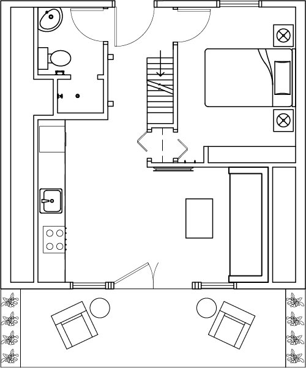
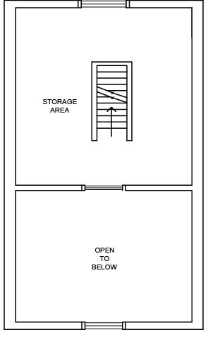
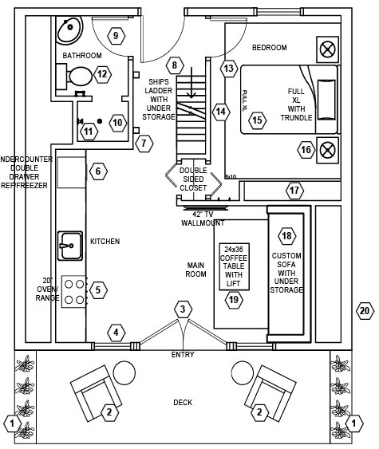
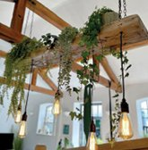
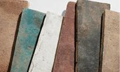
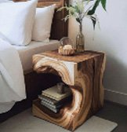
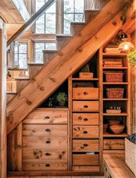

ID: Project / Sustainability
Coeur d’Alene
A-Frame
This A-frame guest house was spaceplanned for a soon-to-be retired airline captain on his mountain lake property in Idaho. Primary consideration on sustainability, durability, and healthy living guided the design, while still maximizing the home’s small footprint. Responsibly sourced materials, efficient use of space, and colors and finishes inspired by the surrounding landscape create a warm, grounded connection to the home’s location.
Plan
A compact first floor holds the kitchen, bath, bedroom and living area, opening onto a deck. A ship’s ladder leads to storage above.


Inspiration
Colors and finishes inspired by the surrounding landscape create a warm, grounded connection to the home’s location.

Materials & products
Product and material selections focused on responsible sourcing, durability, a healthy indoor environment, and long-term performance. Selections include reclaimed and locally crafted woodwork, recycled-content furnishings, low-impact finishes, energy-efficient appliances and lighting, and materials chosen for reduced environmental impact. Whenever possible, products were selected for longevity, repairability, and their ability to reduce the need for future replacement.

Key notes
- Dazuma Landscape Light Spikes
- Polywood Adirondack Chairs
- Birch Creek Hickory Flooring
- Quince Drapery
- Prestige 20” Electric Convection Range
- Therador Under-Counter Double Drawer Refrigerator-Freezer
- Moonshine Lamp Company Wall Sconce
- Old Hat Workshop Custom Ships Ladder/Storage
- Milstone Netzero Floor Tile
- Milstone Wall Tile
- High Sierra Shower Head
- Horow Toilet
- Cottage and Bungalow Jute Rug
- Benjamin Moore Eco Spec Paint
- Old Hat Workshop Custom Platform Bed
- Old Hat Workshop Custom Nightstand
- Old Hat Workshop Custom Bookshelves
- Old Hat Workshop Custom Sofa
- Old Hat Workshop Custom Coffee Table
- Green Building Supply Shake Tiles



